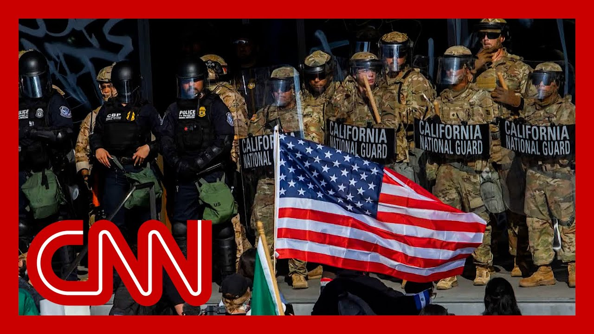

【纽瑟姆寻求紧急命令阻止国民警卫队和海军陆战队进驻洛杉矶】
Summary: California seeks emergency order against Trump's deployment of troops to LA streets, as officials argue local law enforcement can handle protests despite past violence.
摘要： 加州寻求紧急命令反对特朗普向洛杉矶街头派遣军队，官员称尽管过去发生暴力事件，当地执法部门能够应对抗议活动。

⏱️ Estimated Reading Time: 16 min
📚 六级生词 📚 雅思生词 📚 托福生词 📚 专八生词 📚 SAT生词 📚 考研生词 📚 GRE生词 📚 高考生词 📚 视频里的生词
The state of California is seeking an emergency restraining order against the Trump administration deployment of Marines and Nation to conduct law enforcement on the streets of La.
加利福尼亚州正寻求紧急限制令，以阻止特朗普政府派遣海军陆战队和国民警卫队在洛杉矶街头执行执法任务。
If we didn't send out the Nation unless we gave them a little additional help, you wo Los Angeles would be burning rig Last night, they had total contr We didn't have the military in t the National Guard.
如果我们不派出国民警卫队，除非给予少量额外支援，洛杉矶将陷入火海。昨晚他们完全掌控了局面。我们当时并未动用军队或国民警卫队。
And then we also sent in some Ma We had some bad people.
之后我们还派遣了一些海军陆战队。我们遇到了一些暴徒。
They look in your face and they spit right in your face They're animals.
他们直视着你并当面唾弃你。他们是畜生。
And these are paid insurrectioni These are paid troublemakers that agitators, animals, troublemakers, insurrec That's, of course, the president the deployment of thousands of National Guardsmen and Marines to the streets of La Just one way that President Trump is leveraging the United States military to project an image of Dragon three is all American.
这些是受雇的叛乱分子、煽动者、暴徒和麻烦制造者。当然，总统向洛杉矶街头部署数千名国民警卫队和海军陆战队，只是特朗普利用美军塑造"龙三"形象的一种方式。
Three acknowledge strike this afternoon at the nation's largest military base.
今天下午在国家最大军事基地举行的三军联合演习。
President Trump is kicking off a days long celebration of the Army's 250th Today's display, featuring flyovers, paratroopers, a simulated ground operation, all building, of course.
特朗普总统启动了为期数天的陆军成立250周年庆祝活动。今天的展示包括飞行表演、空降兵和模拟地面作战，当然都是为了铺垫。
Two a military parade through the streets of Washingto set for Saturday.
周六将在华盛顿街头举行阅兵式。
That day, flag day also happens to be Donald Trump' 79th birthday.
当天恰逢国旗日，也是唐纳德·特朗普的79岁生日。
At any minute, the president will speak at Fort and bring you that live.
总统随时将在布拉格堡发表讲话，我们将进行现场直播。
And of course, we'll be listenin for what he has to say, if anything, about the protests in Los Angele because that is where we start t with team coverage.
我们当然会关注他是否提及洛杉矶抗议活动，因为这是我们团队报道的起点。
We're going to have our panel we in just a few minutes.
几分钟后我们将请出专家小组。
But we're going to get started with CNN's Kristen Holmes.
但首先连线CNN的克里斯滕·霍姆斯。
She's at the white House.
她在白宫现场。
And Nick, what who is live on the streets of Los Angeles.
还有尼克·瓦特正在洛杉矶街头进行直播。
And that's where we're going to Nick, I want to go first to you.
首先连线尼克。
What are we learning about this emergency order?
关于这项紧急命令我们了解到什么？
And what are you seeing today as drama continues to play out?
随着事态发展，你今天在现场看到什么？
Well, listen, officials in this state, from the governor down to the ma do not want these troops here.
听好了，从州长到市长，加州官员都不希望这些部队出现在这里。
I'm outside the federal detention facility r You can see some California National Guard members, some DHS officers, but most of the military personn that have been deployed here to Los Angeles are being kept well out of public view.
我在联邦拘留中心外，你能看到一些加州国民警卫队成员和国土安全部官员，但大多数派驻洛杉矶的军人都远离公众视线。
The governor said. Actually, only about 315 of them actually have a mission, which he says speaks to the fact that they are not needed, that local law enforcement have this under control.
州长表示，实际上只有约315人有具体任务，这说明他们并不被需要，当地执法部门已控制局势。
Now, right now, there is a smallish protest outs It has been very peaceful.
目前外面有小规模抗议，一直非常和平。
A couple of hundred people singing music, talking, chanting That has been it.
约数百人唱歌、交谈、喊口号，仅此而已。
There has, of course, been violence and vandalism in Los Angeles over the past few nights.
过去几晚洛杉矶确实发生过暴力和破坏行为。
But Mayor Bass of L.A. made it very clear, said, for a national audience, you got to realize this is just a couple of blocks of downtown.
但洛杉矶市长巴斯明确表示，全国观众需要明白这只是市中心几个街区的情况。
This is not the whole city.
并非整座城市都如此。
She added, of course, violence and vandalism unacceptable and anybody involve that will be arrested and prosec She said that those people causing the trouble are not part of this immigration protest.
她补充说暴力和破坏行为不可接受，涉案者将被逮捕起诉。她指出制造事端者并非移民抗议活动参与者。
They are agitators.
他们是煽动者。
So she calls the deployment of these troops a grand experiment.
因此她称此次军队部署是项大型实验。
And she says, listen, maybe what the administration is trying to do is put the fear into everybody.
她说，或许政府试图让所有人感到恐惧。
The federal government that has traditionally protected people could come in to any city and take it over.
传统上保护民众的联邦政府可能进入任何城市实施接管。
Cassie. All right. Nick. What for us? Ni Thank you. Kristen.
凯西。好的尼克。还有什么要补充？谢谢。克里斯滕。
we are expecting to hear from the president at Fort Bragg in North Carolina.
我们预计将听到总统在北卡罗来纳州布拉格堡的讲话。
What do we expect to hear from h And what have we seen there throughout the course of the day
我们预计会听到什么？今天那里情况如何？
Yeah. And, Casey, look, as you said, this is really the start of the 250th birthday for the Army.
是的，凯西，如你所说，这确实是陆军250周年庆的开始。
So expect a lot of praise of the military.
预计会有大量对军队的赞美。
Donald Trump is likely to take c for the growth of the military.
特朗普可能将邀功军队的发展壮大。
He's been doing this since his first term saying that recruitment is up.
他从首个任期就宣称征兵人数上升。
He always says that he saved the military, so expect a lot of that, obvious
他总说自己拯救了军队，显然这类言论会很多。
We also saw him looking at that big demonstratio that you mentioned, but it is also likely that he's going to talk about what's going on in Los Angeles a
我们也看到他观摩了你提到的大型演习，但他很可能也会谈及洛杉矶局势。
He seems to not be able to stop talking about it.
他似乎无法停止谈论此事。
Just in an event, right before he left for Fort Br he took questions on the matter for at least 20 minutes, going into various aspects of what was going on.
就在前往布拉格堡前的活动上，他就此事接受了至少20分钟提问，涉及多个方面。
Now, one of the things was that he doubled down on the that he brought in the national and the Marines, essentially saying he had to because Los Angeles was under si
其中他坚称必须调遣国民警卫队和海军陆战队，因为洛杉矶处于危机中。
He took on Gavin Newsom, Governor Newsom, saying that he had just talked to him on the phone, that he called him and told him to get his act toge
他指责纽瑟姆州长，称刚通过电话要求其整顿工作。
Now, the two of them have been g and forth over that online, having their own personal back a
二人在网上持续交锋，展开个人攻防。
but he also left the door open to use that to invoke the Insurrection Act.
但他也为动用《叛乱法》留下余地。
And that is one thing we've been talking a lot about.
这是我们多次讨论的问题。
We know that there are factions of the administration who are looking at all the different ways to address the situation in Los Angeles that are short of or a little less aggressive than actually invoking the Insurrection Act.
我们知道政府内部有派系正在研究各种处理洛杉矶局势的方案，这些方案比直接动用《叛乱法》更温和。
But Donald Trump himself left the door open and essentially said it would be up to him and what he viewed as an insurrection for him to actually invoke that act.
但特朗普本人留有余地，称是否动用该法取决于他是否认定存在叛乱。
So something that we're keeping a very close eye on there as wel
这也是我们密切关注的事项。
All right. Kristen Holmes, Nick Watt, thanks to both of you for that r
好的，克里斯滕·霍姆斯和尼克·瓦特，感谢报道。
Really appreciate it. We're joined now to talk more about this from Capitol Hil
非常感谢。现在连线国会山深入讨论。
Congressman, California Congress Ted Lieu is with us.
加州众议员刘云平加入我们。
He, of course, serves as the vice chair of the Democratic caucus in his includes much of western LA coun
他作为民主党党团副主席，选区涵盖洛杉矶县西部大部分地区。
Congressman, I'm very grateful to have you on the show today.
众议员先生，非常感谢今天参与节目。
Thank you very much for being he
非常感谢您的到来。
One of your colleagues in the Ho
您的一位众议院同事
Congresswoman Yvette Clark of Ne
纽约州众议员伊薇特·克拉克
She said today that what we're seeing on the streets of Los Angeles, the sending in of the M is impeachable, that the president could be impeached for that.
她今天表示，向洛杉矶街头派遣海军陆战队的行为可构成弹劾理由。
I want to know if if you agree w
请问您是否同意？
It's certainly un-American.
这绝对违背美国精神。
And as a veteran, it sickens me wants to send Marines against Am
作为退伍军人，我对其派遣海军陆战队对抗美国人感到恶心。
And let me first say, peacefully protesting is an American right now.
首先我要说，和平抗议是宪法赋予的权利。
Looting, burning cars, and destroying property are crim
但抢劫、烧车和破坏财产是犯罪。
And people who do that will be prosecuted.
违法者将被起诉。
People do have a right to peaceful protest, and state and local officials have said they have all the reso they need to handle the situatio
民众有权和平抗议，州和地方官员表示拥有处理局势所需全部资源。
There's no reason to send in the who are trained to kill the enem
没有理由派遣训练来杀敌的军队。
What does administration want th in Los Angeles?
政府想在洛杉矶达成什么？
Shoot protesters?
枪杀抗议者吗？
It is insane.
这太疯狂了。
A congressman Republicans are, o claiming that they are the party and order in all of this.
共和党人自称是法律与秩序的政党。
And one Democrat, Senator John Fetterman of Pennsylvania, had a if you will, for those on your side of the ai
宾州民主党参议员约翰·费特曼对您这边的人有个提醒。
I want to show you what he said, and then I'll ask you about it.
请看他的发言，然后请教您的看法。
Take a look.
请看。
We should have learned the lesson back in 2020.
我们本应从2020年事件吸取教训。
Absolutely. There was righteous outrage over what happened to George Floyd.
对弗洛伊德事件的愤怒完全正当。
But that never mean that you can support or b be qui if there's this destruction or rioting and destroying and looting and those kinds of things.
但这绝不意味着可以支持或默许破坏、骚乱和抢劫等行为。
So he used the phrase, we should have learned the lesso
他用了"应吸取教训"的说法。
What do you say to Senator Fette
您对费特曼参议员有何回应？
I think Senator Fetterman may want to look at the statemen that the Democratic elected officials and Southern Californi have been making.
费特曼参议员或许该看看南加州民主党民选官员的声明。
We have all been saying that the right to peacefully pro is protected by the Constitution
我们一致声明和平抗议权受宪法保护。
But no one has a right to destroy property, to commit v
但无人有权破坏财产或实施暴力。
Those are crimes.
这些是犯罪行为。
And those people will be prosecu
违法者将被起诉。
We've been very clear about that
我们对此非常明确。
Now, in terms of law and order, I just want to note their legal
关于法律与秩序，我要指出他们的法律依据。
Donald Trump is relying on to deploy the National Guard under ten U.S.C. section 12 406.
特朗普依据《美国法典》第10编第12406条部署国民警卫队。
He is violating the law because that provision very clea says that the governors of the s have to give the order.
他正在违法，因为该条款明确规定需由州长下达命令。
And Governor Newsom clearly didn't do that.
而纽瑟姆州长显然没有这样做。
And this is very important.
这非常关键。
I ask every National Guard membe to read their orders, read the law, and then decide for themselves if they're following an unlawful
我要求每位国民警卫队员阅读命令和法律，自行判断是否在执行非法命令。
Congressman, do you think that Governor Newso could have done a better job in preventing violence than he did?
众议员先生，您认为纽瑟姆州长本可以更有效预防暴力吗？
No, because Governor Newsom has directed the CHP to go on sc which they have.
不，因为纽瑟姆州长已派遣加州公路巡警到场。
The LAPD is on scene.
洛杉矶警方也在现场。
And by the way, at this very important point I want to make.
顺便我要强调一点。
The National Guard's mission is to protect federal buildings and federal officials.
国民警卫队的任务是保护联邦建筑和官员。
So let's take the burning of car
以烧车事件为例。
Even though the National Guard was all there, which they were n
尽管国民警卫队当时在场（其实不在）
There's nothing they could have because that is not part of the
他们也束手无策，因为这不在其任务范围内。
So of the 2000 National Guard folks deployed 1700 or basically standing around doing nothing and then send additional Marines nothing is a waste of $134 million of taxpayer dollars.
在部署的2000名国民警卫队员中，约1700人基本无所事事，再增派海军陆战队纯属浪费1.34亿美元纳税人资金。
The president needs to rescind both of these orders.
总统需要撤销这两项命令。
we of course, have discussed and President Trump has, and those around him have sugges various things about the use of the Insurrectio
我们当然讨论过，特朗普及其幕僚曾多次暗示可能动用《叛乱法》。
How should Democrats respond if President Trump does invoke the Insurrection Act?
若特朗普真动用《叛乱法》，民主党应如何应对？
If President Trump invokes Insurrection Act, he's doing that unlawfully.
若特朗普动用《叛乱法》，这是违法行为。
If you look at what's happening, these are situations and state law enforcement are tr and can handle.
当前局势完全在州执法部门处理能力范围内。
You don't want the president dep federal troops all over the plac simply because there might be so who are looting stores.
不能仅因有人抢劫商店就让总统在全国各地部署联邦军队。
That's something for local law enforcement to han
这属于地方执法范畴。
And you don't want all 50 states subject to Marines showing up in their local jurisd
也不能让50个州都面临海军陆战队进驻其辖区的情况。
That's authoritarian.
这是独裁行为。
It's un-American, and it would be illegal.
违背美国价值观，且属非法。
So what should Democrats do abou
那么民主党该怎么做？
we should do what we're doing ri which is push back to sue.
我们正在通过法律途径反击。
Governor Newsom has, in fact, filed a lawsuit saying that what Trump is doing is illegal.
纽瑟姆州长已提起诉讼指控特朗普行为违法。
I agree with Governor Newsom.
我支持纽瑟姆州长。
If you just read the law, the president is violating his a abusing his power.
只要阅读法律条文就能看出总统在滥用权力。
And the situation really calls for local law enfor
这种情况本当由地方执法部门处理。
This is a law enforcement issue.
这是执法问题。
The United States Marines are not trained in law enforcement.
美国海军陆战队未接受执法训练。
That is not what they do.
这不是他们的职责。
It's a total mismatch for the mi and a waste of taxpayer money.
完全任务错配，且浪费纳税人资金。
All right, Congressman Ted Lieu, very grateful for your time toda
好的，泰德·刘众议员，非常感谢您的时间。
Thanks very much for spending some time with us t
非常感谢今天接受采访。
Thank you.
谢谢。